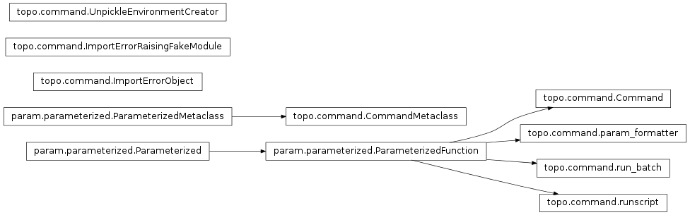

<!DOCTYPE html PUBLIC "-//W3C//DTD XHTML 1.0 Transitional//EN"
  "http://www.w3.org/TR/xhtml1/DTD/xhtml1-transitional.dtd">


<html xmlns="http://www.w3.org/1999/xhtml">
  <head>
    <meta http-equiv="Content-Type" content="text/html; charset=utf-8" />
    
    <title>topo.command Package &mdash; Topographica</title>
    
    <link rel="stylesheet" href="../_static/nature.css" type="text/css" />
    <link rel="stylesheet" href="../_static/pygments.css" type="text/css" />
    <link rel="stylesheet" href="../_static/custom.css" type="text/css" />
    <link rel="stylesheet" href="../_static/bootstrap.css" type="text/css" />
    
    <script type="text/javascript">
      var DOCUMENTATION_OPTIONS = {
        URL_ROOT:    '../',
        VERSION:     '0.9.8',
        COLLAPSE_INDEX: false,
        FILE_SUFFIX: '.html',
        HAS_SOURCE:  true
      };
    </script>
    <script type="text/javascript" src="../_static/jquery.js"></script>
    <script type="text/javascript" src="../_static/underscore.js"></script>
    <script type="text/javascript" src="../_static/doctools.js"></script>
    <script type="text/javascript" src="http://cdn.mathjax.org/mathjax/latest/MathJax.js?config=TeX-AMS-MML_HTMLorMML"></script>
    <script type="text/javascript" src="../_static/custom.js"></script>
    <script type="text/javascript" src="../_static/bootstrap.js"></script>
    <script type="text/javascript" src="../_static/require.js"></script>
    <link rel="shortcut icon" href="../_static/topo-favicon.ico"/>
    <link rel="top" title="Topographica" href="../index.html" /> 
  </head>
  <body>
    <div class="related">
      <h3>Navigation</h3>
      <ul>
        <li class="right" style="margin-right: 10px">
          <a href="../genindex.html" title="General Index"
             accesskey="I">index</a></li>
        <li class="right" >
          <a href="../py-modindex.html" title="Python Module Index"
             >modules</a> |</li>

<li><a href="../index.html">Home</a></li>
<li><a href="../Downloads/index.html">Downloads</a></li>
<li><a href="../Tutorials/index.html">Tutorials</a></li>
<li><a href="../User_Manual/index.html">User Manual</a></li>


      </ul>
    </div>  

    <div class="document">
      <div class="documentwrapper">
        <div class="bodywrapper">
          <div class="body">
            
  <div class="section" id="topo-command-package">
<h1>topo.command Package<a class="headerlink" href="#topo-command-package" title="Permalink to this headline">¶</a></h1>
<hr class="docutils" />
<div class="section" id="command-package">
<h2><tt class="xref py py-mod docutils literal"><span class="pre">command</span></tt> Package<a class="headerlink" href="#command-package" title="Permalink to this headline">¶</a></h2>
<p class="graphviz">

<map id="inheritancef415e0380d" name="inheritancef415e0380d">
<area shape="rect" id="node1" title="params(name=String)" alt="" coords="37,202,296,227"/>
<area shape="rect" id="node2" title="params(name=String)" alt="" coords="376,202,688,227"/>
<area shape="rect" id="node4" href="#topo.command.Command" title="Parameterized command: any error when the command is run (called)" alt="" coords="758,127,949,153"/>
<area shape="rect" id="node10" href="#topo.command.run_batch" title="Run a Topographica simulation in batch mode." alt="" coords="759,226,947,251"/>
<area shape="rect" id="node11" href="#topo.command.runscript" title="Runs a script that has been parameterized with script parameters." alt="" coords="763,275,943,301"/>
<area shape="rect" id="node3" title="The metaclass of Parameterized (and all its descendents)." alt="" coords="5,153,328,178"/>
<area shape="rect" id="node5" title="A class having this as a metaclass will have its __call__() method" alt="" coords="405,153,659,178"/>
<area shape="rect" id="node6" href="#topo.command.ImportErrorObject" title="Raises an ImportError on any attempt to access an attribute, call," alt="" coords="47,103,286,129"/>
<area shape="rect" id="node7" href="#topo.command.ImportErrorRaisingFakeModule" title="Returns an ImportErrorObject for any attribute request." alt="" coords="8,54,325,79"/>
<area shape="rect" id="node8" href="#topo.command.UnpickleEnvironmentCreator" title="When unpickled, installs any necessary legacy support." alt="" coords="13,5,320,30"/>
</map>
</p>
<span class="target" id="module-topo.command"></span><p>A family of high-level user commands acting on the entire simulation.</p>
<p>Any new commands added to this directory will automatically become
available for any program.</p>
<p>Commands here should be &#8216;bullet-proof&#8217; and work &#8216;from scratch&#8217;.
That is, they should print warnings if required but should not raise
errors that would interrupt e.g. a long batch run of simulation work,
no matter what the context from which they are called.</p>
<dl class="function">
<dt id="topo.command.save_snapshot">
<tt class="descclassname">topo.command.</tt><tt class="descname">save_snapshot</tt><big>(</big><em>snapshot_name=None</em><big>)</big><a class="reference internal" href="../_modules/topo/command.html#save_snapshot"><span class="viewcode-link">[source]</span></a><a class="headerlink" href="#topo.command.save_snapshot" title="Permalink to this definition">¶</a></dt>
<dd><p>Save a snapshot of the network&#8217;s current state.</p>
<p>The snapshot is saved as a gzip-compressed Python binary pickle.</p>
<p>As this function uses Python&#8217;s &#8216;pickle&#8217; module, it is subject to
the same limitations (see the pickle module&#8217;s documentation) -
with the notable exception of class attributes. Python does not
pickle class attributes, but this function stores class attributes
of any Parameterized class that is declared within the topo
package. See the param.parameterized.PicklableClassAttributes
class for more information.</p>
</dd></dl>

<dl class="class">
<dt id="topo.command.runscript">
<em class="property">class </em><tt class="descclassname">topo.command.</tt><tt class="descname">runscript</tt><big>(</big><em>**params</em><big>)</big><a class="reference internal" href="../_modules/topo/command.html#runscript"><span class="viewcode-link">[source]</span></a><a class="headerlink" href="#topo.command.runscript" title="Permalink to this definition">¶</a></dt>
<dd><p>Bases: <a class="reference external" href="http://ioam.github.io/param/Reference_Manual/param.html#param.parameterized.ParameterizedFunction" title="(in Param v1.3.1)"><tt class="xref py py-class docutils literal"><span class="pre">param.parameterized.ParameterizedFunction</span></tt></a></p>
<p>Runs a script that has been parameterized with script parameters.
For example, runscript(&#8216;tiny.ty&#8217;, cortex_density=10) will execute
the &#8216;tiny.ty&#8217; script in the currently active namespace.</p>
<dl class="docutils">
<dt><em>param Boolean</em> <tt class="docutils literal"><span class="pre">load</span></tt> (<em>allow_None=False, bounds=(0, 1), constant=False, default=True, instantiate=False, pickle_default_value=True, precedence=None, readonly=False</em>)</dt>
<dd>Whether to automatically load class based models when called.
       Useful for compatibility with older ty script definition files.</dd>
<dt><em>param Callable</em> <tt class="docutils literal"><span class="pre">push</span></tt> (<em>allow_None=True, constant=False, default=None, instantiate=False, pickle_default_value=False, precedence=None, readonly=False</em>)</dt>
<dd>Hook to push the updated namespace for handling more
        complicated namespaces, such as IPython Notebook.</dd>
<dt><em>param Parameter</em> <tt class="docutils literal"><span class="pre">ns</span></tt> (<em>allow_None=False, constant=False, default={}, instantiate=False, pickle_default_value=False, precedence=None, readonly=False</em>)</dt>
<dd>The namespace in which the script is to be executed.</dd>
</dl>
<dl class="method">
<dt id="topo.command.runscript.debug">
<tt class="descname">debug</tt><big>(</big><em>msg</em>, <em>*args</em>, <em>**kw</em><big>)</big><a class="headerlink" href="#topo.command.runscript.debug" title="Permalink to this definition">¶</a></dt>
<dd><p>Print msg merged with args as a debugging statement.</p>
<p>See Python&#8217;s logging module for details of message formatting.</p>
</dd></dl>

<dl class="method">
<dt id="topo.command.runscript.defaults">
<tt class="descname">defaults</tt><big>(</big><big>)</big><a class="headerlink" href="#topo.command.runscript.defaults" title="Permalink to this definition">¶</a></dt>
<dd><p>Return {parameter_name:parameter.default} for all non-constant
Parameters.</p>
<p>Note that a Parameter for which instantiate==True has its default
instantiated.</p>
</dd></dl>

<dl class="attribute">
<dt id="topo.command.runscript.force_new_dynamic_value">
<tt class="descname">force_new_dynamic_value</tt><em class="property"> = &lt;functools.partial object at 0x2ab574e2dd60&gt;</em><a class="headerlink" href="#topo.command.runscript.force_new_dynamic_value" title="Permalink to this definition">¶</a></dt>
<dd></dd></dl>

<dl class="method">
<dt id="topo.command.runscript.get_param_values">
<tt class="descname">get_param_values</tt><big>(</big><em>onlychanged=False</em><big>)</big><a class="headerlink" href="#topo.command.runscript.get_param_values" title="Permalink to this definition">¶</a></dt>
<dd><p>Return a list of name,value pairs for all Parameters of this
object.</p>
<p>If onlychanged is True, will only return values that are not
equal to the default value.</p>
</dd></dl>

<dl class="attribute">
<dt id="topo.command.runscript.get_value_generator">
<tt class="descname">get_value_generator</tt><em class="property"> = &lt;functools.partial object at 0x2ab574e2daa0&gt;</em><a class="headerlink" href="#topo.command.runscript.get_value_generator" title="Permalink to this definition">¶</a></dt>
<dd></dd></dl>

<dl class="attribute">
<dt id="topo.command.runscript.inspect_value">
<tt class="descname">inspect_value</tt><em class="property"> = &lt;functools.partial object at 0x2ab574e2de68&gt;</em><a class="headerlink" href="#topo.command.runscript.inspect_value" title="Permalink to this definition">¶</a></dt>
<dd></dd></dl>

<dl class="attribute">
<dt id="topo.command.runscript.instance">
<tt class="descname">instance</tt><em class="property"> = &lt;functools.partial object at 0x2ab574e2dd08&gt;</em><a class="headerlink" href="#topo.command.runscript.instance" title="Permalink to this definition">¶</a></dt>
<dd></dd></dl>

<dl class="method">
<dt id="topo.command.runscript.message">
<tt class="descname">message</tt><big>(</big><em>msg</em>, <em>*args</em>, <em>**kw</em><big>)</big><a class="headerlink" href="#topo.command.runscript.message" title="Permalink to this definition">¶</a></dt>
<dd><p>Print msg merged with args as a message.</p>
<p>See Python&#8217;s logging module for details of message formatting.</p>
</dd></dl>

<dl class="classmethod">
<dt id="topo.command.runscript.params">
<em class="property">classmethod </em><tt class="descname">params</tt><big>(</big><em>parameter_name=None</em><big>)</big><a class="headerlink" href="#topo.command.runscript.params" title="Permalink to this definition">¶</a></dt>
<dd><p>Return the Parameters of this class as the
dictionary {name: parameter_object}</p>
<p>Includes Parameters from this class and its
superclasses.</p>
</dd></dl>

<dl class="method">
<dt id="topo.command.runscript.pprint">
<tt class="descname">pprint</tt><big>(</big><em>imports=None</em>, <em>prefix='n    '</em>, <em>unknown_value='&lt;?&gt;'</em>, <em>qualify=False</em>, <em>separator=''</em><big>)</big><a class="headerlink" href="#topo.command.runscript.pprint" title="Permalink to this definition">¶</a></dt>
<dd><p>Same as Parameterized.pprint, except that X.classname(Y
is replaced with X.classname.instance(Y</p>
</dd></dl>

<dl class="classmethod">
<dt id="topo.command.runscript.print_param_defaults">
<em class="property">classmethod </em><tt class="descname">print_param_defaults</tt><big>(</big><big>)</big><a class="headerlink" href="#topo.command.runscript.print_param_defaults" title="Permalink to this definition">¶</a></dt>
<dd><p>Print the default values of all cls&#8217;s Parameters.</p>
</dd></dl>

<dl class="method">
<dt id="topo.command.runscript.print_param_values">
<tt class="descname">print_param_values</tt><big>(</big><big>)</big><a class="headerlink" href="#topo.command.runscript.print_param_values" title="Permalink to this definition">¶</a></dt>
<dd><p>Print the values of all this object&#8217;s Parameters.</p>
</dd></dl>

<dl class="method">
<dt id="topo.command.runscript.script_repr">
<tt class="descname">script_repr</tt><big>(</big><em>imports=</em>, <span class="optional">[</span><span class="optional">]</span><em>prefix='    '</em><big>)</big><a class="headerlink" href="#topo.command.runscript.script_repr" title="Permalink to this definition">¶</a></dt>
<dd><p>Same as Parameterized.script_repr, except that X.classname(Y
is replaced with X.classname.instance(Y</p>
</dd></dl>

<dl class="classmethod">
<dt id="topo.command.runscript.set_default">
<em class="property">classmethod </em><tt class="descname">set_default</tt><big>(</big><em>param_name</em>, <em>value</em><big>)</big><a class="headerlink" href="#topo.command.runscript.set_default" title="Permalink to this definition">¶</a></dt>
<dd><p>Set the default value of param_name.</p>
<p>Equivalent to setting param_name on the class.</p>
</dd></dl>

<dl class="attribute">
<dt id="topo.command.runscript.set_dynamic_time_fn">
<tt class="descname">set_dynamic_time_fn</tt><em class="property"> = &lt;functools.partial object at 0x2ab574e2ddb8&gt;</em><a class="headerlink" href="#topo.command.runscript.set_dynamic_time_fn" title="Permalink to this definition">¶</a></dt>
<dd></dd></dl>

<dl class="attribute">
<dt id="topo.command.runscript.set_param">
<tt class="descname">set_param</tt><em class="property"> = &lt;functools.partial object at 0x2ab574e2df18&gt;</em><a class="headerlink" href="#topo.command.runscript.set_param" title="Permalink to this definition">¶</a></dt>
<dd></dd></dl>

<dl class="method">
<dt id="topo.command.runscript.state_pop">
<tt class="descname">state_pop</tt><big>(</big><big>)</big><a class="headerlink" href="#topo.command.runscript.state_pop" title="Permalink to this definition">¶</a></dt>
<dd><p>Restore the most recently saved state.</p>
<p>See state_push() for more details.</p>
</dd></dl>

<dl class="method">
<dt id="topo.command.runscript.state_push">
<tt class="descname">state_push</tt><big>(</big><big>)</big><a class="headerlink" href="#topo.command.runscript.state_push" title="Permalink to this definition">¶</a></dt>
<dd><p>Save this instance&#8217;s state.</p>
<p>For Parameterized instances, this includes the state of
dynamically generated values.</p>
<p>Subclasses that maintain short-term state should additionally
save and restore that state using state_push() and
state_pop().</p>
<p>Generally, this method is used by operations that need to test
something without permanently altering the objects&#8217; state.</p>
</dd></dl>

<dl class="method">
<dt id="topo.command.runscript.verbose">
<tt class="descname">verbose</tt><big>(</big><em>msg</em>, <em>*args</em>, <em>**kw</em><big>)</big><a class="headerlink" href="#topo.command.runscript.verbose" title="Permalink to this definition">¶</a></dt>
<dd><p>Print msg merged with args as a verbose message.</p>
<p>See Python&#8217;s logging module for details of message formatting.</p>
</dd></dl>

<dl class="method">
<dt id="topo.command.runscript.warning">
<tt class="descname">warning</tt><big>(</big><em>msg</em>, <em>*args</em>, <em>**kw</em><big>)</big><a class="headerlink" href="#topo.command.runscript.warning" title="Permalink to this definition">¶</a></dt>
<dd><p>Print msg merged with args as a warning, unless module variable
warnings_as_exceptions is True, then raise an Exception
containing the arguments.</p>
<p>See Python&#8217;s logging module for details of message formatting.</p>
</dd></dl>

</dd></dl>

<dl class="function">
<dt id="topo.command.default_analysis_function">
<tt class="descclassname">topo.command.</tt><tt class="descname">default_analysis_function</tt><big>(</big><big>)</big><a class="reference internal" href="../_modules/topo/command.html#default_analysis_function"><span class="viewcode-link">[source]</span></a><a class="headerlink" href="#topo.command.default_analysis_function" title="Permalink to this definition">¶</a></dt>
<dd><p>Basic example of an analysis command for run_batch; users are
likely to need something similar but highly customized.</p>
</dd></dl>

<dl class="class">
<dt id="topo.command.run_batch">
<em class="property">class </em><tt class="descclassname">topo.command.</tt><tt class="descname">run_batch</tt><big>(</big><em>**params</em><big>)</big><a class="reference internal" href="../_modules/topo/command.html#run_batch"><span class="viewcode-link">[source]</span></a><a class="headerlink" href="#topo.command.run_batch" title="Permalink to this definition">¶</a></dt>
<dd><p>Bases: <a class="reference external" href="http://ioam.github.io/param/Reference_Manual/param.html#param.parameterized.ParameterizedFunction" title="(in Param v1.3.1)"><tt class="xref py py-class docutils literal"><span class="pre">param.parameterized.ParameterizedFunction</span></tt></a></p>
<p>Run a Topographica simulation in batch mode.</p>
<p>Features:</p>
<blockquote>
<div><ul class="simple">
<li>Generates a unique, well-defined name for each &#8216;experiment&#8217;
(i.e. simulation run) based on the date, script file, and
parameter settings. Note that very long names may be truncated
(see the max_name_length parameter).</li>
<li>Allows parameters to be varied on the command-line,
to allow comparing various settings</li>
<li>Saves a script capturing the simulation state periodically,
to preserve parameter values from old experiments and to allow
them to be reproduced exactly later</li>
<li>Can perform user-specified analysis routines periodically,
to monitor the simulation as it progresses.</li>
<li>Stores commandline output (stdout) in the output directory</li>
</ul>
</div></blockquote>
<p>A typical use of this function is for remote execution of a large
number of simulations with different parameters, often on remote
machines (such as clusters).</p>
<p>The script_file parameter defines the .ty script we want to run in
batch mode. The output_directory defines the root directory in
which a unique individual directory will be created for this
particular run.  The optional analysis_fn can be any python
function to be called at each of the simulation iterations defined
in the analysis times list.  The analysis_fn should perform
whatever analysis of the simulation you want to perform, such as
plotting or calculating some statistics.  The analysis_fn should
avoid using any GUI functions (i.e., should not import anything
from topo.tkgui), and it should save all of its results into
files.</p>
<p>As a special case, a number can be passed for the times list, in
which case it is used to scale a default list of times up to
10000; e.g. times=2 will select a default list of times up to
20000.  Alternatively, an explicit list of times can be supplied.</p>
<p>Any other optional parameters supplied will be set in the main
namespace before any scripts are run.  They will also be used to
construct a unique topo.sim.name for the file, and they will be
encoded into the simulation directory name, to make it clear how
each simulation differs from the others.</p>
<p>If requested by setting snapshot=True, saves a snapshot at the
end of the simulation.</p>
<p>If available and requested by setting vc_info=True, prints
the revision number and any outstanding diffs from the version
control system.</p>
<p>Note that this function alters param.normalize_path.prefix so that
all output goes into the same location. The original value of
param.normalize_path.prefix is deliberately not restored at the
end of the function so that the output of any subsequent commands
will go into the same place.</p>
<dl class="docutils">
<dt><em>param Callable</em> <tt class="docutils literal"><span class="pre">dirname_params_filter</span></tt> (<em>allow_None=False, constant=False, default=param_formatter(), instantiate=False, pickle_default_value=True, precedence=None, readonly=False</em>)</dt>
<dd>Function to control how the parameter names will appear in the
        output_directory&#8217;s name.</dd>
</dl>
<p><em>param Callable</em> <tt class="docutils literal"><span class="pre">analysis_fn</span></tt> (<em>allow_None=False, constant=False, instantiate=False, pickle_default_value=True, precedence=None, readonly=False</em>)</p>
<dl class="docutils">
<dt><em>param String</em> <tt class="docutils literal"><span class="pre">progress_bar</span></tt> (<em>allow_None=False, basestring=&lt;type &#8216;basestring&#8217;&gt;, constant=False, default=stdout, instantiate=False, pickle_default_value=True, precedence=None, readonly=False</em>)</dt>
<dd>The display mode for the progress bar. By default, the progress
      of run_batch is displayed using standard output but may also be
      set to &#8216;disabled&#8217; as necessary.</dd>
<dt><em>param Number</em> <tt class="docutils literal"><span class="pre">max_name_length</span></tt> (<em>allow_None=False, bounds=None, constant=False, default=200, inclusive_bounds=(True, True), instantiate=False, pickle_default_value=True, precedence=None, readonly=False, time_dependent=True, time_fn=&lt;Time Time00001&gt;</em>)</dt>
<dd>The experiment&#8217;s directory name will be truncated at this
        number of characters (since most filesystems have a
        limit).</dd>
<dt><em>param String</em> <tt class="docutils literal"><span class="pre">dirname_prefix</span></tt> (<em>allow_None=False, basestring=&lt;type &#8216;basestring&#8217;&gt;, constant=False, default=, instantiate=False, pickle_default_value=True, precedence=None, readonly=False</em>)</dt>
<dd>Optional prefix for the directory name (allowing e.g. easy
        grouping).</dd>
</dl>
<p><em>param Parameter</em> <tt class="docutils literal"><span class="pre">times</span></tt> (<em>allow_None=False, constant=False, default=1.0, instantiate=False, pickle_default_value=True, precedence=None, readonly=False</em>)</p>
<dl class="docutils">
<dt><em>param ObjectSelector</em> <tt class="docutils literal"><span class="pre">save_script_repr</span></tt> (<em>allow_None=None, check_on_set=True, compute_default_fn=None, constant=False, default=first, instantiate=False, objects=[None, &#8216;first&#8217;, &#8216;last&#8217;, &#8216;all&#8217;], pickle_default_value=True, precedence=None, readonly=False</em>)</dt>
<dd>Whether to save a script_repr and if so, how often. If set to
       &#8216;first&#8217;, the script_repr is saved on the first time value, if
       set to &#8216;last&#8217; then it will be saved on the last time value. If
       set to &#8216;all&#8217; then a script repr is saved for all time values.
       Saving is disabled entirely if set to None.</dd>
<dt><em>param String</em> <tt class="docutils literal"><span class="pre">name_time_format</span></tt> (<em>allow_None=False, basestring=&lt;type &#8216;basestring&#8217;&gt;, constant=False, default=%Y%m%d%H%M, instantiate=False, pickle_default_value=True, precedence=None, readonly=False</em>)</dt>
<dd>String format for the time included in the output directory
        and file names.  See the Python time module library
        documentation for codes.

        E.g. Adding &#8216;%S&#8217; to the default would include seconds.</dd>
</dl>
<p><em>param Boolean</em> <tt class="docutils literal"><span class="pre">vc_info</span></tt> (<em>allow_None=False, bounds=(0, 1), constant=False, default=True, instantiate=False, pickle_default_value=True, precedence=None, readonly=False</em>)</p>
<p><em>param String</em> <tt class="docutils literal"><span class="pre">output_directory</span></tt> (<em>allow_None=False, basestring=&lt;type &#8216;basestring&#8217;&gt;, constant=False, default=Output, instantiate=False, pickle_default_value=True, precedence=None, readonly=False</em>)</p>
<dl class="docutils">
<dt><em>param String</em> <tt class="docutils literal"><span class="pre">tag</span></tt> (<em>allow_None=False, basestring=&lt;type &#8216;basestring&#8217;&gt;, constant=False, default=, instantiate=False, pickle_default_value=True, precedence=None, readonly=False</em>)</dt>
<dd>Optional tag to embed in directory prefix to allow unique
        directory naming across multiple independent batches that
        share a common timestamp.</dd>
</dl>
<p><em>param Boolean</em> <tt class="docutils literal"><span class="pre">snapshot</span></tt> (<em>allow_None=False, bounds=(0, 1), constant=False, default=True, instantiate=False, pickle_default_value=True, precedence=None, readonly=False</em>)</p>
<dl class="docutils">
<dt><em>param Number</em> <tt class="docutils literal"><span class="pre">progress_interval</span></tt> (<em>allow_None=False, bounds=None, constant=False, default=100, inclusive_bounds=(True, True), instantiate=False, pickle_default_value=True, precedence=None, readonly=False, time_dependent=True, time_fn=&lt;Time Time00001&gt;</em>)</dt>
<dd>Interval between updates of the progress bar (if enabled) in
      units of topo.sim.time.</dd>
<dt><em>param NumericTuple</em> <tt class="docutils literal"><span class="pre">timestamp</span></tt> (<em>allow_None=False, constant=False, default=(0, 0), instantiate=False, length=2, pickle_default_value=True, precedence=None, readonly=False</em>)</dt>
<dd>Optional override of timestamp in Python struct_time 8-tuple format.
        Useful when running many run_batch commands as part of a group with
        a shared timestamp. By default, the timestamp used is the time when
        run_batch is started.</dd>
<dt><em>param Boolean</em> <tt class="docutils literal"><span class="pre">save_global_params</span></tt> (<em>allow_None=False, bounds=(0, 1), constant=False, default=True, instantiate=False, pickle_default_value=True, precedence=None, readonly=False</em>)</dt>
<dd>Whether to save the script&#8217;s global_parameters to a pickle in
        the output_directory after the script has been loaded (for
        e.g. future inspection of the experiment).</dd>
<dt><em>param String</em> <tt class="docutils literal"><span class="pre">metadata_dir</span></tt> (<em>allow_None=False, basestring=&lt;type &#8216;basestring&#8217;&gt;, constant=False, default=, instantiate=False, pickle_default_value=True, precedence=None, readonly=False</em>)</dt>
<dd>Specifies the name of a
        subdirectory used to output metadata from run_batch (if set).</dd>
<dt><em>param ObjectSelector</em> <tt class="docutils literal"><span class="pre">compress_metadata</span></tt> (<em>allow_None=None, check_on_set=True, compute_default_fn=None, constant=False, default=None, instantiate=False, objects=[None, &#8216;tar.gz&#8217;, &#8216;zip&#8217;], pickle_default_value=True, precedence=None, readonly=False</em>)</dt>
<dd>If not None and a metadata directory is specified, the
         metadata directory will be replaced by either a tar.gz file
         or a .zip file.</dd>
</dl>
<dl class="staticmethod">
<dt id="topo.command.run_batch.analysis_fn">
<em class="property">static </em><tt class="descname">analysis_fn</tt><big>(</big><big>)</big><a class="headerlink" href="#topo.command.run_batch.analysis_fn" title="Permalink to this definition">¶</a></dt>
<dd><p>Basic example of an analysis command for run_batch; users are
likely to need something similar but highly customized.</p>
</dd></dl>

<dl class="method">
<dt id="topo.command.run_batch.debug">
<tt class="descname">debug</tt><big>(</big><em>msg</em>, <em>*args</em>, <em>**kw</em><big>)</big><a class="headerlink" href="#topo.command.run_batch.debug" title="Permalink to this definition">¶</a></dt>
<dd><p>Print msg merged with args as a debugging statement.</p>
<p>See Python&#8217;s logging module for details of message formatting.</p>
</dd></dl>

<dl class="method">
<dt id="topo.command.run_batch.defaults">
<tt class="descname">defaults</tt><big>(</big><big>)</big><a class="headerlink" href="#topo.command.run_batch.defaults" title="Permalink to this definition">¶</a></dt>
<dd><p>Return {parameter_name:parameter.default} for all non-constant
Parameters.</p>
<p>Note that a Parameter for which instantiate==True has its default
instantiated.</p>
</dd></dl>

<dl class="attribute">
<dt id="topo.command.run_batch.force_new_dynamic_value">
<tt class="descname">force_new_dynamic_value</tt><em class="property"> = &lt;functools.partial object at 0x2ab574e2dba8&gt;</em><a class="headerlink" href="#topo.command.run_batch.force_new_dynamic_value" title="Permalink to this definition">¶</a></dt>
<dd></dd></dl>

<dl class="method">
<dt id="topo.command.run_batch.get_param_values">
<tt class="descname">get_param_values</tt><big>(</big><em>onlychanged=False</em><big>)</big><a class="headerlink" href="#topo.command.run_batch.get_param_values" title="Permalink to this definition">¶</a></dt>
<dd><p>Return a list of name,value pairs for all Parameters of this
object.</p>
<p>If onlychanged is True, will only return values that are not
equal to the default value.</p>
</dd></dl>

<dl class="attribute">
<dt id="topo.command.run_batch.get_value_generator">
<tt class="descname">get_value_generator</tt><em class="property"> = &lt;functools.partial object at 0x2ab574e2db50&gt;</em><a class="headerlink" href="#topo.command.run_batch.get_value_generator" title="Permalink to this definition">¶</a></dt>
<dd></dd></dl>

<dl class="attribute">
<dt id="topo.command.run_batch.inspect_value">
<tt class="descname">inspect_value</tt><em class="property"> = &lt;functools.partial object at 0x2ab574e2dc00&gt;</em><a class="headerlink" href="#topo.command.run_batch.inspect_value" title="Permalink to this definition">¶</a></dt>
<dd></dd></dl>

<dl class="attribute">
<dt id="topo.command.run_batch.instance">
<tt class="descname">instance</tt><em class="property"> = &lt;functools.partial object at 0x2ab574e2de68&gt;</em><a class="headerlink" href="#topo.command.run_batch.instance" title="Permalink to this definition">¶</a></dt>
<dd></dd></dl>

<dl class="method">
<dt id="topo.command.run_batch.message">
<tt class="descname">message</tt><big>(</big><em>msg</em>, <em>*args</em>, <em>**kw</em><big>)</big><a class="headerlink" href="#topo.command.run_batch.message" title="Permalink to this definition">¶</a></dt>
<dd><p>Print msg merged with args as a message.</p>
<p>See Python&#8217;s logging module for details of message formatting.</p>
</dd></dl>

<dl class="classmethod">
<dt id="topo.command.run_batch.params">
<em class="property">classmethod </em><tt class="descname">params</tt><big>(</big><em>parameter_name=None</em><big>)</big><a class="headerlink" href="#topo.command.run_batch.params" title="Permalink to this definition">¶</a></dt>
<dd><p>Return the Parameters of this class as the
dictionary {name: parameter_object}</p>
<p>Includes Parameters from this class and its
superclasses.</p>
</dd></dl>

<dl class="method">
<dt id="topo.command.run_batch.pprint">
<tt class="descname">pprint</tt><big>(</big><em>imports=None</em>, <em>prefix='n    '</em>, <em>unknown_value='&lt;?&gt;'</em>, <em>qualify=False</em>, <em>separator=''</em><big>)</big><a class="headerlink" href="#topo.command.run_batch.pprint" title="Permalink to this definition">¶</a></dt>
<dd><p>Same as Parameterized.pprint, except that X.classname(Y
is replaced with X.classname.instance(Y</p>
</dd></dl>

<dl class="classmethod">
<dt id="topo.command.run_batch.print_param_defaults">
<em class="property">classmethod </em><tt class="descname">print_param_defaults</tt><big>(</big><big>)</big><a class="headerlink" href="#topo.command.run_batch.print_param_defaults" title="Permalink to this definition">¶</a></dt>
<dd><p>Print the default values of all cls&#8217;s Parameters.</p>
</dd></dl>

<dl class="method">
<dt id="topo.command.run_batch.print_param_values">
<tt class="descname">print_param_values</tt><big>(</big><big>)</big><a class="headerlink" href="#topo.command.run_batch.print_param_values" title="Permalink to this definition">¶</a></dt>
<dd><p>Print the values of all this object&#8217;s Parameters.</p>
</dd></dl>

<dl class="method">
<dt id="topo.command.run_batch.script_repr">
<tt class="descname">script_repr</tt><big>(</big><em>imports=</em>, <span class="optional">[</span><span class="optional">]</span><em>prefix='    '</em><big>)</big><a class="headerlink" href="#topo.command.run_batch.script_repr" title="Permalink to this definition">¶</a></dt>
<dd><p>Same as Parameterized.script_repr, except that X.classname(Y
is replaced with X.classname.instance(Y</p>
</dd></dl>

<dl class="classmethod">
<dt id="topo.command.run_batch.set_default">
<em class="property">classmethod </em><tt class="descname">set_default</tt><big>(</big><em>param_name</em>, <em>value</em><big>)</big><a class="headerlink" href="#topo.command.run_batch.set_default" title="Permalink to this definition">¶</a></dt>
<dd><p>Set the default value of param_name.</p>
<p>Equivalent to setting param_name on the class.</p>
</dd></dl>

<dl class="attribute">
<dt id="topo.command.run_batch.set_dynamic_time_fn">
<tt class="descname">set_dynamic_time_fn</tt><em class="property"> = &lt;functools.partial object at 0x2ab574e2daf8&gt;</em><a class="headerlink" href="#topo.command.run_batch.set_dynamic_time_fn" title="Permalink to this definition">¶</a></dt>
<dd></dd></dl>

<dl class="attribute">
<dt id="topo.command.run_batch.set_param">
<tt class="descname">set_param</tt><em class="property"> = &lt;functools.partial object at 0x2ab574e2df70&gt;</em><a class="headerlink" href="#topo.command.run_batch.set_param" title="Permalink to this definition">¶</a></dt>
<dd></dd></dl>

<dl class="method">
<dt id="topo.command.run_batch.state_pop">
<tt class="descname">state_pop</tt><big>(</big><big>)</big><a class="headerlink" href="#topo.command.run_batch.state_pop" title="Permalink to this definition">¶</a></dt>
<dd><p>Restore the most recently saved state.</p>
<p>See state_push() for more details.</p>
</dd></dl>

<dl class="method">
<dt id="topo.command.run_batch.state_push">
<tt class="descname">state_push</tt><big>(</big><big>)</big><a class="headerlink" href="#topo.command.run_batch.state_push" title="Permalink to this definition">¶</a></dt>
<dd><p>Save this instance&#8217;s state.</p>
<p>For Parameterized instances, this includes the state of
dynamically generated values.</p>
<p>Subclasses that maintain short-term state should additionally
save and restore that state using state_push() and
state_pop().</p>
<p>Generally, this method is used by operations that need to test
something without permanently altering the objects&#8217; state.</p>
</dd></dl>

<dl class="method">
<dt id="topo.command.run_batch.verbose">
<tt class="descname">verbose</tt><big>(</big><em>msg</em>, <em>*args</em>, <em>**kw</em><big>)</big><a class="headerlink" href="#topo.command.run_batch.verbose" title="Permalink to this definition">¶</a></dt>
<dd><p>Print msg merged with args as a verbose message.</p>
<p>See Python&#8217;s logging module for details of message formatting.</p>
</dd></dl>

<dl class="method">
<dt id="topo.command.run_batch.warning">
<tt class="descname">warning</tt><big>(</big><em>msg</em>, <em>*args</em>, <em>**kw</em><big>)</big><a class="headerlink" href="#topo.command.run_batch.warning" title="Permalink to this definition">¶</a></dt>
<dd><p>Print msg merged with args as a warning, unless module variable
warnings_as_exceptions is True, then raise an Exception
containing the arguments.</p>
<p>See Python&#8217;s logging module for details of message formatting.</p>
</dd></dl>

</dd></dl>

<dl class="function">
<dt id="topo.command.load_kwargs">
<tt class="descclassname">topo.command.</tt><tt class="descname">load_kwargs</tt><big>(</big><em>fname</em>, <em>glob</em>, <em>loc</em>, <em>fail_exception=False</em><big>)</big><a class="reference internal" href="../_modules/topo/command.html#load_kwargs"><span class="viewcode-link">[source]</span></a><a class="headerlink" href="#topo.command.load_kwargs" title="Permalink to this definition">¶</a></dt>
<dd><p>Helper function to allow keyword arguments (dictionary format)
to be  loaded from a file &#8216;fname&#8217;. The intended use is to allow a callable
(specifically run_batch) to obtain its settings and parameters from file.</p>
<p>This is useful when dispatching jobs on a cluster as you can then queue
run_batch jobs (eg. using qsub) before all the settings are known. This
type of scenario is typical in parameter search (eg hillclimbing) where
the settings file for future run_batch instances are conditional on data
from previous simulations.</p>
<p>Variable glob should be provided as globals() and loc should be provided
as locals(). Either a dictionary is returned or an exception is raised
(conditioned on fail_exception). If fail_exception=False and eval does
not evaluateas expected, an empty dictionary is returned. Eval is used
as it allows classes, objects and other complex datastructures to load.</p>
</dd></dl>

<dl class="function">
<dt id="topo.command.save_script_repr">
<tt class="descclassname">topo.command.</tt><tt class="descname">save_script_repr</tt><big>(</big><em>script_name=None</em><big>)</big><a class="reference internal" href="../_modules/topo/command.html#save_script_repr"><span class="viewcode-link">[source]</span></a><a class="headerlink" href="#topo.command.save_script_repr" title="Permalink to this definition">¶</a></dt>
<dd><p>Save the current simulation as a Topographica script.</p>
<p>Generates a script that, if run, would generate a simulation with
the same architecture as the one currently in memory.  This can be
useful when defining networks in place, so that the same general
configuration can be recreated later.  It also helps when
comparing two similar networks generated with different scripts,
so that the corresponding items can be matched rigorously.</p>
<p>Note that the result of this operation is usually just a starting
point for further editing, because it will not usually be runnable
as-is (for instance, some parameters may not have runnable
representations).  Even so, this is usually a good start.</p>
</dd></dl>

<dl class="function">
<dt id="topo.command.generate_example">
<tt class="descclassname">topo.command.</tt><tt class="descname">generate_example</tt><big>(</big><em>target</em><big>)</big><a class="reference internal" href="../_modules/topo/command.html#generate_example"><span class="viewcode-link">[source]</span></a><a class="headerlink" href="#topo.command.generate_example" title="Permalink to this definition">¶</a></dt>
<dd><p>Generate the saved network target, as defined in
topo.misc.genexamples.</p>
</dd></dl>

<dl class="class">
<dt id="topo.command.PatternDrivenAnalysis">
<em class="property">class </em><tt class="descclassname">topo.command.</tt><tt class="descname">PatternDrivenAnalysis</tt><big>(</big><em>**params</em><big>)</big><a class="headerlink" href="#topo.command.PatternDrivenAnalysis" title="Permalink to this definition">¶</a></dt>
<dd><p>Bases: <a class="reference external" href="http://ioam.github.io/param/Reference_Manual/param.html#param.parameterized.ParameterizedFunction" title="(in Param v1.3.1)"><tt class="xref py py-class docutils literal"><span class="pre">param.parameterized.ParameterizedFunction</span></tt></a></p>
<p>Abstract base class for various stimulus-response types of analysis.</p>
<p>This type of analysis consists of presenting a set of input
patterns and collecting the responses to each one, which one will
often want to do in a way that does not affect the current state
of the network.</p>
<p>To achieve this, the class defines several types of hooks where
arbitrary function objects (i.e., callables) can be registered.
These hooks are generally used to ensure that unrelated previous
activity is eliminated, that subsequent patterns do not interact,
and that the initial state is restored after analysis.</p>
<p>Any subclasses must ensure that these hook lists are run at the
appropriate stage in their processing, using e.g.
&#8220;for f in some_hook_list: f()&#8221;.</p>
<dl class="docutils">
<dt><em>param HookList</em> <tt class="docutils literal"><span class="pre">pre_presentation_hooks</span></tt> (<em>allow_None=False, bounds=(0, None), constant=False, default=[&lt;bound method Simulation.state_push of Simulation(basename_format=&#8217;%(name)s_%(timestr)s&#8217;, name=None, register=True, startup_commands=[], time=Time(label=&#8217;Time&#8217;, name=&#8217;Time00001&#8217;, time_type=&lt;built-in function mpq&gt;, timestep=1.0, unit=None, until=Infinity()), time_printing_format=&#8217;%(_time)09.2f&#8217;)&gt;, &lt;function wipe_out_activity at 0x2ab573286758&gt;, &lt;function clear_event_queue at 0x2ab57327ee60&gt;], instantiate=False, pickle_default_value=True, precedence=None, readonly=False</em>)</dt>
<dd>List of callable objects to be run before each pattern is presented.</dd>
<dt><em>param HookList</em> <tt class="docutils literal"><span class="pre">post_presentation_hooks</span></tt> (<em>allow_None=False, bounds=(0, None), constant=False, default=[&lt;bound method Simulation.state_pop of Simulation(basename_format=&#8217;%(name)s_%(timestr)s&#8217;, name=None, register=True, startup_commands=[], time=Time(label=&#8217;Time&#8217;, name=&#8217;Time00001&#8217;, time_type=&lt;built-in function mpq&gt;, timestep=1.0, unit=None, until=Infinity()), time_printing_format=&#8217;%(_time)09.2f&#8217;)&gt;], instantiate=False, pickle_default_value=True, precedence=None, readonly=False</em>)</dt>
<dd>List of callable objects to be run after each pattern is presented.</dd>
<dt><em>param HookList</em> <tt class="docutils literal"><span class="pre">post_analysis_session_hooks</span></tt> (<em>allow_None=False, bounds=(0, None), constant=False, default=[], instantiate=False, pickle_default_value=True, precedence=None, readonly=False</em>)</dt>
<dd>List of callable objects to be run after an analysis session ends.</dd>
<dt><em>param HookList</em> <tt class="docutils literal"><span class="pre">pre_analysis_session_hooks</span></tt> (<em>allow_None=False, bounds=(0, None), constant=False, default=[], instantiate=False, pickle_default_value=True, precedence=None, readonly=False</em>)</dt>
<dd>List of callable objects to be run before an analysis session begins.</dd>
</dl>
<dl class="method">
<dt id="topo.command.PatternDrivenAnalysis.debug">
<tt class="descname">debug</tt><big>(</big><em>msg</em>, <em>*args</em>, <em>**kw</em><big>)</big><a class="headerlink" href="#topo.command.PatternDrivenAnalysis.debug" title="Permalink to this definition">¶</a></dt>
<dd><p>Print msg merged with args as a debugging statement.</p>
<p>See Python&#8217;s logging module for details of message formatting.</p>
</dd></dl>

<dl class="method">
<dt id="topo.command.PatternDrivenAnalysis.defaults">
<tt class="descname">defaults</tt><big>(</big><big>)</big><a class="headerlink" href="#topo.command.PatternDrivenAnalysis.defaults" title="Permalink to this definition">¶</a></dt>
<dd><p>Return {parameter_name:parameter.default} for all non-constant
Parameters.</p>
<p>Note that a Parameter for which instantiate==True has its default
instantiated.</p>
</dd></dl>

<dl class="attribute">
<dt id="topo.command.PatternDrivenAnalysis.force_new_dynamic_value">
<tt class="descname">force_new_dynamic_value</tt><em class="property"> = &lt;functools.partial object at 0x2ab574e2ddb8&gt;</em><a class="headerlink" href="#topo.command.PatternDrivenAnalysis.force_new_dynamic_value" title="Permalink to this definition">¶</a></dt>
<dd></dd></dl>

<dl class="method">
<dt id="topo.command.PatternDrivenAnalysis.get_param_values">
<tt class="descname">get_param_values</tt><big>(</big><em>onlychanged=False</em><big>)</big><a class="headerlink" href="#topo.command.PatternDrivenAnalysis.get_param_values" title="Permalink to this definition">¶</a></dt>
<dd><p>Return a list of name,value pairs for all Parameters of this
object.</p>
<p>If onlychanged is True, will only return values that are not
equal to the default value.</p>
</dd></dl>

<dl class="attribute">
<dt id="topo.command.PatternDrivenAnalysis.get_value_generator">
<tt class="descname">get_value_generator</tt><em class="property"> = &lt;functools.partial object at 0x2ab574e2dcb0&gt;</em><a class="headerlink" href="#topo.command.PatternDrivenAnalysis.get_value_generator" title="Permalink to this definition">¶</a></dt>
<dd></dd></dl>

<dl class="attribute">
<dt id="topo.command.PatternDrivenAnalysis.inspect_value">
<tt class="descname">inspect_value</tt><em class="property"> = &lt;functools.partial object at 0x2ab57631f050&gt;</em><a class="headerlink" href="#topo.command.PatternDrivenAnalysis.inspect_value" title="Permalink to this definition">¶</a></dt>
<dd></dd></dl>

<dl class="attribute">
<dt id="topo.command.PatternDrivenAnalysis.instance">
<tt class="descname">instance</tt><em class="property"> = &lt;functools.partial object at 0x2ab57631f0a8&gt;</em><a class="headerlink" href="#topo.command.PatternDrivenAnalysis.instance" title="Permalink to this definition">¶</a></dt>
<dd></dd></dl>

<dl class="method">
<dt id="topo.command.PatternDrivenAnalysis.message">
<tt class="descname">message</tt><big>(</big><em>msg</em>, <em>*args</em>, <em>**kw</em><big>)</big><a class="headerlink" href="#topo.command.PatternDrivenAnalysis.message" title="Permalink to this definition">¶</a></dt>
<dd><p>Print msg merged with args as a message.</p>
<p>See Python&#8217;s logging module for details of message formatting.</p>
</dd></dl>

<dl class="classmethod">
<dt id="topo.command.PatternDrivenAnalysis.params">
<em class="property">classmethod </em><tt class="descname">params</tt><big>(</big><em>parameter_name=None</em><big>)</big><a class="headerlink" href="#topo.command.PatternDrivenAnalysis.params" title="Permalink to this definition">¶</a></dt>
<dd><p>Return the Parameters of this class as the
dictionary {name: parameter_object}</p>
<p>Includes Parameters from this class and its
superclasses.</p>
</dd></dl>

<dl class="method">
<dt id="topo.command.PatternDrivenAnalysis.pprint">
<tt class="descname">pprint</tt><big>(</big><em>imports=None</em>, <em>prefix='n    '</em>, <em>unknown_value='&lt;?&gt;'</em>, <em>qualify=False</em>, <em>separator=''</em><big>)</big><a class="headerlink" href="#topo.command.PatternDrivenAnalysis.pprint" title="Permalink to this definition">¶</a></dt>
<dd><p>Same as Parameterized.pprint, except that X.classname(Y
is replaced with X.classname.instance(Y</p>
</dd></dl>

<dl class="classmethod">
<dt id="topo.command.PatternDrivenAnalysis.print_param_defaults">
<em class="property">classmethod </em><tt class="descname">print_param_defaults</tt><big>(</big><big>)</big><a class="headerlink" href="#topo.command.PatternDrivenAnalysis.print_param_defaults" title="Permalink to this definition">¶</a></dt>
<dd><p>Print the default values of all cls&#8217;s Parameters.</p>
</dd></dl>

<dl class="method">
<dt id="topo.command.PatternDrivenAnalysis.print_param_values">
<tt class="descname">print_param_values</tt><big>(</big><big>)</big><a class="headerlink" href="#topo.command.PatternDrivenAnalysis.print_param_values" title="Permalink to this definition">¶</a></dt>
<dd><p>Print the values of all this object&#8217;s Parameters.</p>
</dd></dl>

<dl class="method">
<dt id="topo.command.PatternDrivenAnalysis.script_repr">
<tt class="descname">script_repr</tt><big>(</big><em>imports=</em>, <span class="optional">[</span><span class="optional">]</span><em>prefix='    '</em><big>)</big><a class="headerlink" href="#topo.command.PatternDrivenAnalysis.script_repr" title="Permalink to this definition">¶</a></dt>
<dd><p>Same as Parameterized.script_repr, except that X.classname(Y
is replaced with X.classname.instance(Y</p>
</dd></dl>

<dl class="classmethod">
<dt id="topo.command.PatternDrivenAnalysis.set_default">
<em class="property">classmethod </em><tt class="descname">set_default</tt><big>(</big><em>param_name</em>, <em>value</em><big>)</big><a class="headerlink" href="#topo.command.PatternDrivenAnalysis.set_default" title="Permalink to this definition">¶</a></dt>
<dd><p>Set the default value of param_name.</p>
<p>Equivalent to setting param_name on the class.</p>
</dd></dl>

<dl class="attribute">
<dt id="topo.command.PatternDrivenAnalysis.set_dynamic_time_fn">
<tt class="descname">set_dynamic_time_fn</tt><em class="property"> = &lt;functools.partial object at 0x2ab57631f470&gt;</em><a class="headerlink" href="#topo.command.PatternDrivenAnalysis.set_dynamic_time_fn" title="Permalink to this definition">¶</a></dt>
<dd></dd></dl>

<dl class="attribute">
<dt id="topo.command.PatternDrivenAnalysis.set_param">
<tt class="descname">set_param</tt><em class="property"> = &lt;functools.partial object at 0x2ab57631f4c8&gt;</em><a class="headerlink" href="#topo.command.PatternDrivenAnalysis.set_param" title="Permalink to this definition">¶</a></dt>
<dd></dd></dl>

<dl class="method">
<dt id="topo.command.PatternDrivenAnalysis.state_pop">
<tt class="descname">state_pop</tt><big>(</big><big>)</big><a class="headerlink" href="#topo.command.PatternDrivenAnalysis.state_pop" title="Permalink to this definition">¶</a></dt>
<dd><p>Restore the most recently saved state.</p>
<p>See state_push() for more details.</p>
</dd></dl>

<dl class="method">
<dt id="topo.command.PatternDrivenAnalysis.state_push">
<tt class="descname">state_push</tt><big>(</big><big>)</big><a class="headerlink" href="#topo.command.PatternDrivenAnalysis.state_push" title="Permalink to this definition">¶</a></dt>
<dd><p>Save this instance&#8217;s state.</p>
<p>For Parameterized instances, this includes the state of
dynamically generated values.</p>
<p>Subclasses that maintain short-term state should additionally
save and restore that state using state_push() and
state_pop().</p>
<p>Generally, this method is used by operations that need to test
something without permanently altering the objects&#8217; state.</p>
</dd></dl>

<dl class="method">
<dt id="topo.command.PatternDrivenAnalysis.verbose">
<tt class="descname">verbose</tt><big>(</big><em>msg</em>, <em>*args</em>, <em>**kw</em><big>)</big><a class="headerlink" href="#topo.command.PatternDrivenAnalysis.verbose" title="Permalink to this definition">¶</a></dt>
<dd><p>Print msg merged with args as a verbose message.</p>
<p>See Python&#8217;s logging module for details of message formatting.</p>
</dd></dl>

<dl class="method">
<dt id="topo.command.PatternDrivenAnalysis.warning">
<tt class="descname">warning</tt><big>(</big><em>msg</em>, <em>*args</em>, <em>**kw</em><big>)</big><a class="headerlink" href="#topo.command.PatternDrivenAnalysis.warning" title="Permalink to this definition">¶</a></dt>
<dd><p>Print msg merged with args as a warning, unless module variable
warnings_as_exceptions is True, then raise an Exception
containing the arguments.</p>
<p>See Python&#8217;s logging module for details of message formatting.</p>
</dd></dl>

</dd></dl>

<dl class="class">
<dt id="topo.command.Command">
<em class="property">class </em><tt class="descclassname">topo.command.</tt><tt class="descname">Command</tt><big>(</big><em>**params</em><big>)</big><a class="reference internal" href="../_modules/topo/command.html#Command"><span class="viewcode-link">[source]</span></a><a class="headerlink" href="#topo.command.Command" title="Permalink to this definition">¶</a></dt>
<dd><p>Bases: <a class="reference external" href="http://ioam.github.io/param/Reference_Manual/param.html#param.parameterized.ParameterizedFunction" title="(in Param v1.3.1)"><tt class="xref py py-class docutils literal"><span class="pre">param.parameterized.ParameterizedFunction</span></tt></a></p>
<p>Parameterized command: any error when the command is run (called)
will not raise an exception, but will instead generate a warning.</p>
<dl class="method">
<dt id="topo.command.Command.debug">
<tt class="descname">debug</tt><big>(</big><em>msg</em>, <em>*args</em>, <em>**kw</em><big>)</big><a class="headerlink" href="#topo.command.Command.debug" title="Permalink to this definition">¶</a></dt>
<dd><p>Print msg merged with args as a debugging statement.</p>
<p>See Python&#8217;s logging module for details of message formatting.</p>
</dd></dl>

<dl class="method">
<dt id="topo.command.Command.defaults">
<tt class="descname">defaults</tt><big>(</big><big>)</big><a class="headerlink" href="#topo.command.Command.defaults" title="Permalink to this definition">¶</a></dt>
<dd><p>Return {parameter_name:parameter.default} for all non-constant
Parameters.</p>
<p>Note that a Parameter for which instantiate==True has its default
instantiated.</p>
</dd></dl>

<dl class="attribute">
<dt id="topo.command.Command.force_new_dynamic_value">
<tt class="descname">force_new_dynamic_value</tt><em class="property"> = &lt;functools.partial object at 0x2ab574e2dfc8&gt;</em><a class="headerlink" href="#topo.command.Command.force_new_dynamic_value" title="Permalink to this definition">¶</a></dt>
<dd></dd></dl>

<dl class="method">
<dt id="topo.command.Command.get_param_values">
<tt class="descname">get_param_values</tt><big>(</big><em>onlychanged=False</em><big>)</big><a class="headerlink" href="#topo.command.Command.get_param_values" title="Permalink to this definition">¶</a></dt>
<dd><p>Return a list of name,value pairs for all Parameters of this
object.</p>
<p>If onlychanged is True, will only return values that are not
equal to the default value.</p>
</dd></dl>

<dl class="attribute">
<dt id="topo.command.Command.get_value_generator">
<tt class="descname">get_value_generator</tt><em class="property"> = &lt;functools.partial object at 0x2ab574e2de68&gt;</em><a class="headerlink" href="#topo.command.Command.get_value_generator" title="Permalink to this definition">¶</a></dt>
<dd></dd></dl>

<dl class="attribute">
<dt id="topo.command.Command.inspect_value">
<tt class="descname">inspect_value</tt><em class="property"> = &lt;functools.partial object at 0x2ab574e2de10&gt;</em><a class="headerlink" href="#topo.command.Command.inspect_value" title="Permalink to this definition">¶</a></dt>
<dd></dd></dl>

<dl class="attribute">
<dt id="topo.command.Command.instance">
<tt class="descname">instance</tt><em class="property"> = &lt;functools.partial object at 0x2ab574e2dc58&gt;</em><a class="headerlink" href="#topo.command.Command.instance" title="Permalink to this definition">¶</a></dt>
<dd></dd></dl>

<dl class="method">
<dt id="topo.command.Command.message">
<tt class="descname">message</tt><big>(</big><em>msg</em>, <em>*args</em>, <em>**kw</em><big>)</big><a class="headerlink" href="#topo.command.Command.message" title="Permalink to this definition">¶</a></dt>
<dd><p>Print msg merged with args as a message.</p>
<p>See Python&#8217;s logging module for details of message formatting.</p>
</dd></dl>

<dl class="classmethod">
<dt id="topo.command.Command.params">
<em class="property">classmethod </em><tt class="descname">params</tt><big>(</big><em>parameter_name=None</em><big>)</big><a class="headerlink" href="#topo.command.Command.params" title="Permalink to this definition">¶</a></dt>
<dd><p>Return the Parameters of this class as the
dictionary {name: parameter_object}</p>
<p>Includes Parameters from this class and its
superclasses.</p>
</dd></dl>

<dl class="method">
<dt id="topo.command.Command.pprint">
<tt class="descname">pprint</tt><big>(</big><em>imports=None</em>, <em>prefix='n    '</em>, <em>unknown_value='&lt;?&gt;'</em>, <em>qualify=False</em>, <em>separator=''</em><big>)</big><a class="headerlink" href="#topo.command.Command.pprint" title="Permalink to this definition">¶</a></dt>
<dd><p>Same as Parameterized.pprint, except that X.classname(Y
is replaced with X.classname.instance(Y</p>
</dd></dl>

<dl class="classmethod">
<dt id="topo.command.Command.print_param_defaults">
<em class="property">classmethod </em><tt class="descname">print_param_defaults</tt><big>(</big><big>)</big><a class="headerlink" href="#topo.command.Command.print_param_defaults" title="Permalink to this definition">¶</a></dt>
<dd><p>Print the default values of all cls&#8217;s Parameters.</p>
</dd></dl>

<dl class="method">
<dt id="topo.command.Command.print_param_values">
<tt class="descname">print_param_values</tt><big>(</big><big>)</big><a class="headerlink" href="#topo.command.Command.print_param_values" title="Permalink to this definition">¶</a></dt>
<dd><p>Print the values of all this object&#8217;s Parameters.</p>
</dd></dl>

<dl class="method">
<dt id="topo.command.Command.script_repr">
<tt class="descname">script_repr</tt><big>(</big><em>imports=</em>, <span class="optional">[</span><span class="optional">]</span><em>prefix='    '</em><big>)</big><a class="headerlink" href="#topo.command.Command.script_repr" title="Permalink to this definition">¶</a></dt>
<dd><p>Same as Parameterized.script_repr, except that X.classname(Y
is replaced with X.classname.instance(Y</p>
</dd></dl>

<dl class="classmethod">
<dt id="topo.command.Command.set_default">
<em class="property">classmethod </em><tt class="descname">set_default</tt><big>(</big><em>param_name</em>, <em>value</em><big>)</big><a class="headerlink" href="#topo.command.Command.set_default" title="Permalink to this definition">¶</a></dt>
<dd><p>Set the default value of param_name.</p>
<p>Equivalent to setting param_name on the class.</p>
</dd></dl>

<dl class="attribute">
<dt id="topo.command.Command.set_dynamic_time_fn">
<tt class="descname">set_dynamic_time_fn</tt><em class="property"> = &lt;functools.partial object at 0x2ab574e2dc00&gt;</em><a class="headerlink" href="#topo.command.Command.set_dynamic_time_fn" title="Permalink to this definition">¶</a></dt>
<dd></dd></dl>

<dl class="attribute">
<dt id="topo.command.Command.set_param">
<tt class="descname">set_param</tt><em class="property"> = &lt;functools.partial object at 0x2ab574e2daa0&gt;</em><a class="headerlink" href="#topo.command.Command.set_param" title="Permalink to this definition">¶</a></dt>
<dd></dd></dl>

<dl class="method">
<dt id="topo.command.Command.state_pop">
<tt class="descname">state_pop</tt><big>(</big><big>)</big><a class="headerlink" href="#topo.command.Command.state_pop" title="Permalink to this definition">¶</a></dt>
<dd><p>Restore the most recently saved state.</p>
<p>See state_push() for more details.</p>
</dd></dl>

<dl class="method">
<dt id="topo.command.Command.state_push">
<tt class="descname">state_push</tt><big>(</big><big>)</big><a class="headerlink" href="#topo.command.Command.state_push" title="Permalink to this definition">¶</a></dt>
<dd><p>Save this instance&#8217;s state.</p>
<p>For Parameterized instances, this includes the state of
dynamically generated values.</p>
<p>Subclasses that maintain short-term state should additionally
save and restore that state using state_push() and
state_pop().</p>
<p>Generally, this method is used by operations that need to test
something without permanently altering the objects&#8217; state.</p>
</dd></dl>

<dl class="method">
<dt id="topo.command.Command.verbose">
<tt class="descname">verbose</tt><big>(</big><em>msg</em>, <em>*args</em>, <em>**kw</em><big>)</big><a class="headerlink" href="#topo.command.Command.verbose" title="Permalink to this definition">¶</a></dt>
<dd><p>Print msg merged with args as a verbose message.</p>
<p>See Python&#8217;s logging module for details of message formatting.</p>
</dd></dl>

<dl class="method">
<dt id="topo.command.Command.warning">
<tt class="descname">warning</tt><big>(</big><em>msg</em>, <em>*args</em>, <em>**kw</em><big>)</big><a class="headerlink" href="#topo.command.Command.warning" title="Permalink to this definition">¶</a></dt>
<dd><p>Print msg merged with args as a warning, unless module variable
warnings_as_exceptions is True, then raise an Exception
containing the arguments.</p>
<p>See Python&#8217;s logging module for details of message formatting.</p>
</dd></dl>

</dd></dl>

<dl class="function">
<dt id="topo.command.clear_event_queue">
<tt class="descclassname">topo.command.</tt><tt class="descname">clear_event_queue</tt><big>(</big><big>)</big><a class="reference internal" href="../_modules/topo/command.html#clear_event_queue"><span class="viewcode-link">[source]</span></a><a class="headerlink" href="#topo.command.clear_event_queue" title="Permalink to this definition">¶</a></dt>
<dd><p>Remove pending events from the simulator&#8217;s event queue.</p>
</dd></dl>

<dl class="function">
<dt id="topo.command.wipe_out_activity">
<tt class="descclassname">topo.command.</tt><tt class="descname">wipe_out_activity</tt><big>(</big><big>)</big><a class="reference internal" href="../_modules/topo/command.html#wipe_out_activity"><span class="viewcode-link">[source]</span></a><a class="headerlink" href="#topo.command.wipe_out_activity" title="Permalink to this definition">¶</a></dt>
<dd><p>Resets activity of all Sheets and their connections to zero.</p>
</dd></dl>

<dl class="class">
<dt id="topo.command.normalize_path">
<em class="property">class </em><tt class="descclassname">topo.command.</tt><tt class="descname">normalize_path</tt><big>(</big><em>**params</em><big>)</big><a class="headerlink" href="#topo.command.normalize_path" title="Permalink to this definition">¶</a></dt>
<dd><p>Bases: <a class="reference external" href="http://ioam.github.io/param/Reference_Manual/param.html#param.parameterized.ParameterizedFunction" title="(in Param v1.3.1)"><tt class="xref py py-class docutils literal"><span class="pre">param.parameterized.ParameterizedFunction</span></tt></a></p>
<p>params(prefix=String, name=String)</p>
<blockquote>
<div><p>Convert a UNIX-style path to the current OS&#8217;s format,
typically for creating a new file or directory.</p>
<p>If the path is not already absolute, it will be made absolute
(using the prefix parameter).</p>
<p>Should do the same as Python&#8217;s os.path.abspath(), except using
prefix rather than os.getcwd).</p>
</div></blockquote>
<p>
Parameters changed from their default values are marked in red.
Soft bound values are marked in cyan.
C/V= Constant/Variable, RO/RW = ReadOnly/ReadWrite, AN=Allow None</p>
<p>Name                      Value                     Type   Mode </p>
<p>prefix   &#8216;/var/lib/buildbot/slaves/topographic...  String  V RW</p>
<p>Parameter docstrings:
=====================</p>
<p>prefix: Prepended to the specified path, if that path is not
        absolute.</p>
<dl class="docutils">
<dt><em>param String</em> <tt class="docutils literal"><span class="pre">prefix</span></tt> (<em>allow_None=False, basestring=&lt;type &#8216;basestring&#8217;&gt;, constant=False, default=/var/lib/buildbot/slaves/topographica_docs/build/doc, instantiate=False, pickle_default_value=False, precedence=None, readonly=False</em>)</dt>
<dd>Prepended to the specified path, if that path is not
        absolute.</dd>
</dl>
<dl class="method">
<dt id="topo.command.normalize_path.debug">
<tt class="descname">debug</tt><big>(</big><em>msg</em>, <em>*args</em>, <em>**kw</em><big>)</big><a class="headerlink" href="#topo.command.normalize_path.debug" title="Permalink to this definition">¶</a></dt>
<dd><p>Print msg merged with args as a debugging statement.</p>
<p>See Python&#8217;s logging module for details of message formatting.</p>
</dd></dl>

<dl class="method">
<dt id="topo.command.normalize_path.defaults">
<tt class="descname">defaults</tt><big>(</big><big>)</big><a class="headerlink" href="#topo.command.normalize_path.defaults" title="Permalink to this definition">¶</a></dt>
<dd><p>Return {parameter_name:parameter.default} for all non-constant
Parameters.</p>
<p>Note that a Parameter for which instantiate==True has its default
instantiated.</p>
</dd></dl>

<dl class="attribute">
<dt id="topo.command.normalize_path.force_new_dynamic_value">
<tt class="descname">force_new_dynamic_value</tt><em class="property"> = &lt;functools.partial object at 0x2ab574e2ddb8&gt;</em><a class="headerlink" href="#topo.command.normalize_path.force_new_dynamic_value" title="Permalink to this definition">¶</a></dt>
<dd></dd></dl>

<dl class="method">
<dt id="topo.command.normalize_path.get_param_values">
<tt class="descname">get_param_values</tt><big>(</big><em>onlychanged=False</em><big>)</big><a class="headerlink" href="#topo.command.normalize_path.get_param_values" title="Permalink to this definition">¶</a></dt>
<dd><p>Return a list of name,value pairs for all Parameters of this
object.</p>
<p>If onlychanged is True, will only return values that are not
equal to the default value.</p>
</dd></dl>

<dl class="attribute">
<dt id="topo.command.normalize_path.get_value_generator">
<tt class="descname">get_value_generator</tt><em class="property"> = &lt;functools.partial object at 0x2ab574e2dfc8&gt;</em><a class="headerlink" href="#topo.command.normalize_path.get_value_generator" title="Permalink to this definition">¶</a></dt>
<dd></dd></dl>

<dl class="attribute">
<dt id="topo.command.normalize_path.inspect_value">
<tt class="descname">inspect_value</tt><em class="property"> = &lt;functools.partial object at 0x2ab574e2dd08&gt;</em><a class="headerlink" href="#topo.command.normalize_path.inspect_value" title="Permalink to this definition">¶</a></dt>
<dd></dd></dl>

<dl class="attribute">
<dt id="topo.command.normalize_path.instance">
<tt class="descname">instance</tt><em class="property"> = &lt;functools.partial object at 0x2ab574e2dcb0&gt;</em><a class="headerlink" href="#topo.command.normalize_path.instance" title="Permalink to this definition">¶</a></dt>
<dd></dd></dl>

<dl class="method">
<dt id="topo.command.normalize_path.message">
<tt class="descname">message</tt><big>(</big><em>msg</em>, <em>*args</em>, <em>**kw</em><big>)</big><a class="headerlink" href="#topo.command.normalize_path.message" title="Permalink to this definition">¶</a></dt>
<dd><p>Print msg merged with args as a message.</p>
<p>See Python&#8217;s logging module for details of message formatting.</p>
</dd></dl>

<dl class="classmethod">
<dt id="topo.command.normalize_path.params">
<em class="property">classmethod </em><tt class="descname">params</tt><big>(</big><em>parameter_name=None</em><big>)</big><a class="headerlink" href="#topo.command.normalize_path.params" title="Permalink to this definition">¶</a></dt>
<dd><p>Return the Parameters of this class as the
dictionary {name: parameter_object}</p>
<p>Includes Parameters from this class and its
superclasses.</p>
</dd></dl>

<dl class="method">
<dt id="topo.command.normalize_path.pprint">
<tt class="descname">pprint</tt><big>(</big><em>imports=None</em>, <em>prefix='n    '</em>, <em>unknown_value='&lt;?&gt;'</em>, <em>qualify=False</em>, <em>separator=''</em><big>)</big><a class="headerlink" href="#topo.command.normalize_path.pprint" title="Permalink to this definition">¶</a></dt>
<dd><p>Same as Parameterized.pprint, except that X.classname(Y
is replaced with X.classname.instance(Y</p>
</dd></dl>

<dl class="classmethod">
<dt id="topo.command.normalize_path.print_param_defaults">
<em class="property">classmethod </em><tt class="descname">print_param_defaults</tt><big>(</big><big>)</big><a class="headerlink" href="#topo.command.normalize_path.print_param_defaults" title="Permalink to this definition">¶</a></dt>
<dd><p>Print the default values of all cls&#8217;s Parameters.</p>
</dd></dl>

<dl class="method">
<dt id="topo.command.normalize_path.print_param_values">
<tt class="descname">print_param_values</tt><big>(</big><big>)</big><a class="headerlink" href="#topo.command.normalize_path.print_param_values" title="Permalink to this definition">¶</a></dt>
<dd><p>Print the values of all this object&#8217;s Parameters.</p>
</dd></dl>

<dl class="method">
<dt id="topo.command.normalize_path.script_repr">
<tt class="descname">script_repr</tt><big>(</big><em>imports=</em>, <span class="optional">[</span><span class="optional">]</span><em>prefix='    '</em><big>)</big><a class="headerlink" href="#topo.command.normalize_path.script_repr" title="Permalink to this definition">¶</a></dt>
<dd><p>Same as Parameterized.script_repr, except that X.classname(Y
is replaced with X.classname.instance(Y</p>
</dd></dl>

<dl class="classmethod">
<dt id="topo.command.normalize_path.set_default">
<em class="property">classmethod </em><tt class="descname">set_default</tt><big>(</big><em>param_name</em>, <em>value</em><big>)</big><a class="headerlink" href="#topo.command.normalize_path.set_default" title="Permalink to this definition">¶</a></dt>
<dd><p>Set the default value of param_name.</p>
<p>Equivalent to setting param_name on the class.</p>
</dd></dl>

<dl class="attribute">
<dt id="topo.command.normalize_path.set_dynamic_time_fn">
<tt class="descname">set_dynamic_time_fn</tt><em class="property"> = &lt;functools.partial object at 0x2ab574e2db50&gt;</em><a class="headerlink" href="#topo.command.normalize_path.set_dynamic_time_fn" title="Permalink to this definition">¶</a></dt>
<dd></dd></dl>

<dl class="attribute">
<dt id="topo.command.normalize_path.set_param">
<tt class="descname">set_param</tt><em class="property"> = &lt;functools.partial object at 0x2ab574e2df70&gt;</em><a class="headerlink" href="#topo.command.normalize_path.set_param" title="Permalink to this definition">¶</a></dt>
<dd></dd></dl>

<dl class="method">
<dt id="topo.command.normalize_path.state_pop">
<tt class="descname">state_pop</tt><big>(</big><big>)</big><a class="headerlink" href="#topo.command.normalize_path.state_pop" title="Permalink to this definition">¶</a></dt>
<dd><p>Restore the most recently saved state.</p>
<p>See state_push() for more details.</p>
</dd></dl>

<dl class="method">
<dt id="topo.command.normalize_path.state_push">
<tt class="descname">state_push</tt><big>(</big><big>)</big><a class="headerlink" href="#topo.command.normalize_path.state_push" title="Permalink to this definition">¶</a></dt>
<dd><p>Save this instance&#8217;s state.</p>
<p>For Parameterized instances, this includes the state of
dynamically generated values.</p>
<p>Subclasses that maintain short-term state should additionally
save and restore that state using state_push() and
state_pop().</p>
<p>Generally, this method is used by operations that need to test
something without permanently altering the objects&#8217; state.</p>
</dd></dl>

<dl class="method">
<dt id="topo.command.normalize_path.verbose">
<tt class="descname">verbose</tt><big>(</big><em>msg</em>, <em>*args</em>, <em>**kw</em><big>)</big><a class="headerlink" href="#topo.command.normalize_path.verbose" title="Permalink to this definition">¶</a></dt>
<dd><p>Print msg merged with args as a verbose message.</p>
<p>See Python&#8217;s logging module for details of message formatting.</p>
</dd></dl>

<dl class="method">
<dt id="topo.command.normalize_path.warning">
<tt class="descname">warning</tt><big>(</big><em>msg</em>, <em>*args</em>, <em>**kw</em><big>)</big><a class="headerlink" href="#topo.command.normalize_path.warning" title="Permalink to this definition">¶</a></dt>
<dd><p>Print msg merged with args as a warning, unless module variable
warnings_as_exceptions is True, then raise an Exception
containing the arguments.</p>
<p>See Python&#8217;s logging module for details of message formatting.</p>
</dd></dl>

</dd></dl>

<dl class="function">
<dt id="topo.command.restore_input_generators">
<tt class="descclassname">topo.command.</tt><tt class="descname">restore_input_generators</tt><big>(</big><big>)</big><a class="reference internal" href="../_modules/topo/command.html#restore_input_generators"><span class="viewcode-link">[source]</span></a><a class="headerlink" href="#topo.command.restore_input_generators" title="Permalink to this definition">¶</a></dt>
<dd><p>Restore previously saved input_generators for all of topo.sim&#8217;s GeneratorSheets.</p>
</dd></dl>

<dl class="class">
<dt id="topo.command.ParameterizedFunction">
<em class="property">class </em><tt class="descclassname">topo.command.</tt><tt class="descname">ParameterizedFunction</tt><big>(</big><em>**params</em><big>)</big><a class="headerlink" href="#topo.command.ParameterizedFunction" title="Permalink to this definition">¶</a></dt>
<dd><p>Bases: <a class="reference external" href="http://ioam.github.io/param/Reference_Manual/param.html#param.parameterized.Parameterized" title="(in Param v1.3.1)"><tt class="xref py py-class docutils literal"><span class="pre">param.parameterized.Parameterized</span></tt></a></p>
<p>params(name=String)</p>
<blockquote>
<div><p>Acts like a Python function, but with arguments that are Parameters.</p>
<p>Implemented as a subclass of Parameterized that, when instantiated,
automatically invokes __call__ and returns the result, instead of
returning an instance of the class.</p>
<p>To obtain an instance of this class, call instance().</p>
</div></blockquote>
<p>
Object has no parameters.</p>
<dl class="method">
<dt id="topo.command.ParameterizedFunction.debug">
<tt class="descname">debug</tt><big>(</big><em>msg</em>, <em>*args</em>, <em>**kw</em><big>)</big><a class="headerlink" href="#topo.command.ParameterizedFunction.debug" title="Permalink to this definition">¶</a></dt>
<dd><p>Print msg merged with args as a debugging statement.</p>
<p>See Python&#8217;s logging module for details of message formatting.</p>
</dd></dl>

<dl class="method">
<dt id="topo.command.ParameterizedFunction.defaults">
<tt class="descname">defaults</tt><big>(</big><big>)</big><a class="headerlink" href="#topo.command.ParameterizedFunction.defaults" title="Permalink to this definition">¶</a></dt>
<dd><p>Return {parameter_name:parameter.default} for all non-constant
Parameters.</p>
<p>Note that a Parameter for which instantiate==True has its default
instantiated.</p>
</dd></dl>

<dl class="attribute">
<dt id="topo.command.ParameterizedFunction.force_new_dynamic_value">
<tt class="descname">force_new_dynamic_value</tt><em class="property"> = &lt;functools.partial object at 0x2ab574e2dc00&gt;</em><a class="headerlink" href="#topo.command.ParameterizedFunction.force_new_dynamic_value" title="Permalink to this definition">¶</a></dt>
<dd></dd></dl>

<dl class="method">
<dt id="topo.command.ParameterizedFunction.get_param_values">
<tt class="descname">get_param_values</tt><big>(</big><em>onlychanged=False</em><big>)</big><a class="headerlink" href="#topo.command.ParameterizedFunction.get_param_values" title="Permalink to this definition">¶</a></dt>
<dd><p>Return a list of name,value pairs for all Parameters of this
object.</p>
<p>If onlychanged is True, will only return values that are not
equal to the default value.</p>
</dd></dl>

<dl class="attribute">
<dt id="topo.command.ParameterizedFunction.get_value_generator">
<tt class="descname">get_value_generator</tt><em class="property"> = &lt;functools.partial object at 0x2ab576331050&gt;</em><a class="headerlink" href="#topo.command.ParameterizedFunction.get_value_generator" title="Permalink to this definition">¶</a></dt>
<dd></dd></dl>

<dl class="attribute">
<dt id="topo.command.ParameterizedFunction.inspect_value">
<tt class="descname">inspect_value</tt><em class="property"> = &lt;functools.partial object at 0x2ab5763310a8&gt;</em><a class="headerlink" href="#topo.command.ParameterizedFunction.inspect_value" title="Permalink to this definition">¶</a></dt>
<dd></dd></dl>

<dl class="attribute">
<dt id="topo.command.ParameterizedFunction.instance">
<tt class="descname">instance</tt><em class="property"> = &lt;functools.partial object at 0x2ab576331158&gt;</em><a class="headerlink" href="#topo.command.ParameterizedFunction.instance" title="Permalink to this definition">¶</a></dt>
<dd></dd></dl>

<dl class="method">
<dt id="topo.command.ParameterizedFunction.message">
<tt class="descname">message</tt><big>(</big><em>msg</em>, <em>*args</em>, <em>**kw</em><big>)</big><a class="headerlink" href="#topo.command.ParameterizedFunction.message" title="Permalink to this definition">¶</a></dt>
<dd><p>Print msg merged with args as a message.</p>
<p>See Python&#8217;s logging module for details of message formatting.</p>
</dd></dl>

<dl class="classmethod">
<dt id="topo.command.ParameterizedFunction.params">
<em class="property">classmethod </em><tt class="descname">params</tt><big>(</big><em>parameter_name=None</em><big>)</big><a class="headerlink" href="#topo.command.ParameterizedFunction.params" title="Permalink to this definition">¶</a></dt>
<dd><p>Return the Parameters of this class as the
dictionary {name: parameter_object}</p>
<p>Includes Parameters from this class and its
superclasses.</p>
</dd></dl>

<dl class="method">
<dt id="topo.command.ParameterizedFunction.pprint">
<tt class="descname">pprint</tt><big>(</big><em>imports=None</em>, <em>prefix='n    '</em>, <em>unknown_value='&lt;?&gt;'</em>, <em>qualify=False</em>, <em>separator=''</em><big>)</big><a class="headerlink" href="#topo.command.ParameterizedFunction.pprint" title="Permalink to this definition">¶</a></dt>
<dd><p>Same as Parameterized.pprint, except that X.classname(Y
is replaced with X.classname.instance(Y</p>
</dd></dl>

<dl class="classmethod">
<dt id="topo.command.ParameterizedFunction.print_param_defaults">
<em class="property">classmethod </em><tt class="descname">print_param_defaults</tt><big>(</big><big>)</big><a class="headerlink" href="#topo.command.ParameterizedFunction.print_param_defaults" title="Permalink to this definition">¶</a></dt>
<dd><p>Print the default values of all cls&#8217;s Parameters.</p>
</dd></dl>

<dl class="method">
<dt id="topo.command.ParameterizedFunction.print_param_values">
<tt class="descname">print_param_values</tt><big>(</big><big>)</big><a class="headerlink" href="#topo.command.ParameterizedFunction.print_param_values" title="Permalink to this definition">¶</a></dt>
<dd><p>Print the values of all this object&#8217;s Parameters.</p>
</dd></dl>

<dl class="method">
<dt id="topo.command.ParameterizedFunction.script_repr">
<tt class="descname">script_repr</tt><big>(</big><em>imports=</em>, <span class="optional">[</span><span class="optional">]</span><em>prefix='    '</em><big>)</big><a class="headerlink" href="#topo.command.ParameterizedFunction.script_repr" title="Permalink to this definition">¶</a></dt>
<dd><p>Same as Parameterized.script_repr, except that X.classname(Y
is replaced with X.classname.instance(Y</p>
</dd></dl>

<dl class="classmethod">
<dt id="topo.command.ParameterizedFunction.set_default">
<em class="property">classmethod </em><tt class="descname">set_default</tt><big>(</big><em>param_name</em>, <em>value</em><big>)</big><a class="headerlink" href="#topo.command.ParameterizedFunction.set_default" title="Permalink to this definition">¶</a></dt>
<dd><p>Set the default value of param_name.</p>
<p>Equivalent to setting param_name on the class.</p>
</dd></dl>

<dl class="attribute">
<dt id="topo.command.ParameterizedFunction.set_dynamic_time_fn">
<tt class="descname">set_dynamic_time_fn</tt><em class="property"> = &lt;functools.partial object at 0x2ab576331520&gt;</em><a class="headerlink" href="#topo.command.ParameterizedFunction.set_dynamic_time_fn" title="Permalink to this definition">¶</a></dt>
<dd></dd></dl>

<dl class="attribute">
<dt id="topo.command.ParameterizedFunction.set_param">
<tt class="descname">set_param</tt><em class="property"> = &lt;functools.partial object at 0x2ab576331578&gt;</em><a class="headerlink" href="#topo.command.ParameterizedFunction.set_param" title="Permalink to this definition">¶</a></dt>
<dd></dd></dl>

<dl class="method">
<dt id="topo.command.ParameterizedFunction.state_pop">
<tt class="descname">state_pop</tt><big>(</big><big>)</big><a class="headerlink" href="#topo.command.ParameterizedFunction.state_pop" title="Permalink to this definition">¶</a></dt>
<dd><p>Restore the most recently saved state.</p>
<p>See state_push() for more details.</p>
</dd></dl>

<dl class="method">
<dt id="topo.command.ParameterizedFunction.state_push">
<tt class="descname">state_push</tt><big>(</big><big>)</big><a class="headerlink" href="#topo.command.ParameterizedFunction.state_push" title="Permalink to this definition">¶</a></dt>
<dd><p>Save this instance&#8217;s state.</p>
<p>For Parameterized instances, this includes the state of
dynamically generated values.</p>
<p>Subclasses that maintain short-term state should additionally
save and restore that state using state_push() and
state_pop().</p>
<p>Generally, this method is used by operations that need to test
something without permanently altering the objects&#8217; state.</p>
</dd></dl>

<dl class="method">
<dt id="topo.command.ParameterizedFunction.verbose">
<tt class="descname">verbose</tt><big>(</big><em>msg</em>, <em>*args</em>, <em>**kw</em><big>)</big><a class="headerlink" href="#topo.command.ParameterizedFunction.verbose" title="Permalink to this definition">¶</a></dt>
<dd><p>Print msg merged with args as a verbose message.</p>
<p>See Python&#8217;s logging module for details of message formatting.</p>
</dd></dl>

<dl class="method">
<dt id="topo.command.ParameterizedFunction.warning">
<tt class="descname">warning</tt><big>(</big><em>msg</em>, <em>*args</em>, <em>**kw</em><big>)</big><a class="headerlink" href="#topo.command.ParameterizedFunction.warning" title="Permalink to this definition">¶</a></dt>
<dd><p>Print msg merged with args as a warning, unless module variable
warnings_as_exceptions is True, then raise an Exception
containing the arguments.</p>
<p>See Python&#8217;s logging module for details of message formatting.</p>
</dd></dl>

</dd></dl>

<dl class="function">
<dt id="topo.command.n_conns">
<tt class="descclassname">topo.command.</tt><tt class="descname">n_conns</tt><big>(</big><big>)</big><a class="reference internal" href="../_modules/topo/command.html#n_conns"><span class="viewcode-link">[source]</span></a><a class="headerlink" href="#topo.command.n_conns" title="Permalink to this definition">¶</a></dt>
<dd><p>Count the number of connections in all ProjectionSheets in the current Simulation.</p>
</dd></dl>

<dl class="function">
<dt id="topo.command.load_snapshot">
<tt class="descclassname">topo.command.</tt><tt class="descname">load_snapshot</tt><big>(</big><em>snapshot_name</em><big>)</big><a class="reference internal" href="../_modules/topo/command.html#load_snapshot"><span class="viewcode-link">[source]</span></a><a class="headerlink" href="#topo.command.load_snapshot" title="Permalink to this definition">¶</a></dt>
<dd><p>Load the simulation stored in snapshot_name.</p>
</dd></dl>

<dl class="function">
<dt id="topo.command.print_sizes">
<tt class="descclassname">topo.command.</tt><tt class="descname">print_sizes</tt><big>(</big><big>)</big><a class="reference internal" href="../_modules/topo/command.html#print_sizes"><span class="viewcode-link">[source]</span></a><a class="headerlink" href="#topo.command.print_sizes" title="Permalink to this definition">¶</a></dt>
<dd><p>Format the results from n_conns() and n_bytes() for use in batch output.</p>
</dd></dl>

<dl class="function">
<dt id="topo.command.n_bytes">
<tt class="descclassname">topo.command.</tt><tt class="descname">n_bytes</tt><big>(</big><big>)</big><a class="reference internal" href="../_modules/topo/command.html#n_bytes"><span class="viewcode-link">[source]</span></a><a class="headerlink" href="#topo.command.n_bytes" title="Permalink to this definition">¶</a></dt>
<dd><p>Estimate the minimum memory needed for the Sheets in this Simulation, in bytes.</p>
<p>This estimate is a lower bound only, based primarily on memory for
the matrices used for activity and connections.</p>
</dd></dl>

<dl class="function">
<dt id="topo.command.save_input_generators">
<tt class="descclassname">topo.command.</tt><tt class="descname">save_input_generators</tt><big>(</big><big>)</big><a class="reference internal" href="../_modules/topo/command.html#save_input_generators"><span class="viewcode-link">[source]</span></a><a class="headerlink" href="#topo.command.save_input_generators" title="Permalink to this definition">¶</a></dt>
<dd><p>Save a copy of the active_sim&#8217;s current input_generators for all GeneratorSheets.</p>
</dd></dl>

<dl class="class">
<dt id="topo.command.UnpickleEnvironmentCreator">
<em class="property">class </em><tt class="descclassname">topo.command.</tt><tt class="descname">UnpickleEnvironmentCreator</tt><big>(</big><em>release</em>, <em>version</em><big>)</big><a class="reference internal" href="../_modules/topo/command.html#UnpickleEnvironmentCreator"><span class="viewcode-link">[source]</span></a><a class="headerlink" href="#topo.command.UnpickleEnvironmentCreator" title="Permalink to this definition">¶</a></dt>
<dd><p>Bases: <a class="reference external" href="http://docs.python.org/library/functions.html#object" title="(in Python v2.7)"><tt class="xref py py-class docutils literal"><span class="pre">object</span></tt></a></p>
<p>When unpickled, installs any necessary legacy support.</p>
</dd></dl>

<dl class="class">
<dt id="topo.command.ImportErrorRaisingFakeModule">
<em class="property">class </em><tt class="descclassname">topo.command.</tt><tt class="descname">ImportErrorRaisingFakeModule</tt><big>(</big><em>module_name</em><big>)</big><a class="reference internal" href="../_modules/topo/command.html#ImportErrorRaisingFakeModule"><span class="viewcode-link">[source]</span></a><a class="headerlink" href="#topo.command.ImportErrorRaisingFakeModule" title="Permalink to this definition">¶</a></dt>
<dd><p>Bases: <a class="reference external" href="http://docs.python.org/library/functions.html#object" title="(in Python v2.7)"><tt class="xref py py-class docutils literal"><span class="pre">object</span></tt></a></p>
<p>Returns an ImportErrorObject for any attribute request.</p>
<p>Instances of this class can be used in place of a module to delay
an import error until the point of use of an attribute of that
module.</p>
<p>See ImportErrorObject for more details.</p>
</dd></dl>

<dl class="class">
<dt id="topo.command.ImportErrorObject">
<em class="property">class </em><tt class="descclassname">topo.command.</tt><tt class="descname">ImportErrorObject</tt><big>(</big><em>module_name</em><big>)</big><a class="reference internal" href="../_modules/topo/command.html#ImportErrorObject"><span class="viewcode-link">[source]</span></a><a class="headerlink" href="#topo.command.ImportErrorObject" title="Permalink to this definition">¶</a></dt>
<dd><p>Bases: <a class="reference external" href="http://docs.python.org/library/functions.html#object" title="(in Python v2.7)"><tt class="xref py py-class docutils literal"><span class="pre">object</span></tt></a></p>
<p>Raises an ImportError on any attempt to access an attribute, call,
or get an item.</p>
<p>Useful to delay an ImportError until the point of use, thus
allowing e.g. a class attribute to contain something from a
non-core external module (e.g. pylab).</p>
<p>Delaying an ImportError until the point of use allows users to be
informed of the possibility of having various extra functions on
installation of a missing package.</p>
</dd></dl>

</div>
<hr class="docutils" />
<div class="section" id="analysis-module">
<h2><tt class="xref py py-mod docutils literal"><span class="pre">analysis</span></tt> Module<a class="headerlink" href="#analysis-module" title="Permalink to this headline">¶</a></h2>
<span class="target" id="module-topo.command.analysis"></span></div>
<hr class="docutils" />
<div class="section" id="pylabplot-module">
<h2><tt class="xref py py-mod docutils literal"><span class="pre">pylabplot</span></tt> Module<a class="headerlink" href="#pylabplot-module" title="Permalink to this headline">¶</a></h2>
<hr class="docutils" />
</div>
</div>


          </div>
        </div>
      </div>
      <div class="sphinxsidebar">
        <div class="sphinxsidebarwrapper">
            <p class="logo"><a href="../index.html">
              
            </a></p>
<ul class="global-toc">

<li><a href="../index.html">Home</a></li>
<li><a href="../News/index.html">News</a></li>
<li><a href="../Downloads/index.html">Downloads</a></li>
<li><a href="../Tutorials/index.html">Tutorials</a></li>
<li><a href="../User_Manual/index.html">User Manual</a></li>
<li><a href="index.html">Reference Manual</a></li>
<li><a href="../Developer_Manual/index.html">Developer Manual</a></li>
<li><a href="http://github.com/ioam/topographica">Github Source Code</a></li>
<li><a href="../Forums/index.html">Forums</a></li>
<li><a href="../Team_Members/index.html">Team Members</a></li>
<li><a href="../Future_Work/index.html">Future Work</a></li>
<li><a href="../FAQ/index.html">FAQ</a></li>
<li><a href="../Links/index.html">Links</a></li>
<li><a href="../Home/pubs.html">Publications</a></li>
<li><a href="../site_map.html">Site Map</a></li>
</ul>
<h3><a href="../index.html">Table Of Contents</a></h3>

<ul>
<li><a class="reference internal" href="#">topo.command Package</a><ul>
<li><a class="reference internal" href="#command-package"><tt class="docutils literal"><span class="pre">command</span></tt> Package</a></li>
<li><a class="reference internal" href="#analysis-module"><tt class="docutils literal"><span class="pre">analysis</span></tt> Module</a></li>
<li><a class="reference internal" href="#pylabplot-module"><tt class="docutils literal"><span class="pre">pylabplot</span></tt> Module</a></li>
</ul>
</li>
</ul>


<h3>This Page</h3>
<ul class="this-page-menu">
	<li><a	href="https://github.com/ioam/topographica/edit/master/doc/Reference_Manual/topo.command.rst" rel="nofollow">Edit on GitHub</a></li>
    <li><a	href="http://doozy.inf.ed.ac.uk:8010/builders/topographica_docs" rel="nofollow">Rebuild docs</a></li>
</ul>

<div id="searchbox" style="display: none">
  <h3>Quick search</h3>
    <form class="search" action="../search.html" method="get">
      <input type="text" name="q" />
      <input type="submit" value="Go" />
      <input type="hidden" name="check_keywords" value="yes" />
      <input type="hidden" name="area" value="default" />
    </form>
    <p class="searchtip" style="font-size: 90%">
    Enter search terms or a module, class or function name.
    </p>
</div>
<script type="text/javascript">$('#searchbox').show(0);</script>
        </div>
      </div>
      <div class="clearer"></div>
    </div>
    <div class="related">
      <h3>Navigation</h3>
      <ul>
        <li class="right" style="margin-right: 10px">
          <a href="../genindex.html" title="General Index"
             >index</a></li>
        <li class="right" >
          <a href="../py-modindex.html" title="Python Module Index"
             >modules</a> |</li>

<li><a href="../index.html">Home</a></li>
<li><a href="../Downloads/index.html">Downloads</a></li>
<li><a href="../Tutorials/index.html">Tutorials</a></li>
<li><a href="../User_Manual/index.html">User Manual</a></li>


      </ul>
    </div>
    <div class="footer">
        &copy; Copyright 2013, IOAM.
      Created using <a href="http://sphinx-doc.org/">Sphinx</a> 1.2.2.
    </div>
  </body>
</html>